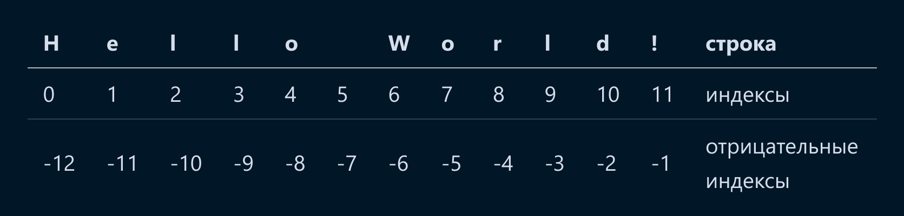

Переменные. Строки
Переменные в Python
Зачем нужны переменные
Представьте себе, что вам надо вычислить следующие операции.
Если мы хотим в дальнейшем использовать результат этого вычисления, то нам необходимо данную формулировку записать заново, что неудобно. Поэтому мы можем закрепить за результатом вычисления конкретное имя, то есть присвоить результату данного выражения переменную.
result = ((20 * 5)**2 ) / (1004**2 + 500**4)
print(result) # переменная ссылается на результат вычисления
print(result ** 2) # результат можно использовать в других вычисления через переменную
Переменные в Python - это ярлыки, которые вы можете прикрепить к данным. Например, вы можете создать переменную с именем age и прикрепить ее к числу 18, означающий возраст. Позже, если вы захотите использовать это число, вам не нужно будет помнить само число, вы можете просто использовать переменную age, и Python скажет вам, что в ней хранится. Переменные помогают вам управлять и хранить информацию в вашей программе.
Правила создания переменных в Python
При создании имен переменных необходимо придерживаться нескольких правил.
Название переменной должно:
- начинаться с буквы;
- быть записано маленькими латинскими буквами;
- быть разделено нижним подчеркиванием
_, если в названии переменной несколько слов; - отображать, какой объект за переменной находиться (иметь семантическую связь).
Рассмотрим примеры правильных имен переменных.
# 1. Можно называть:
age_in_years = 34 # возраст в годах
weight = 50 # вес
id = 123 # идентификатор
_id = 321 # может начинаться с символа "_"
_ = 1 # даже только "_"
Age = 4
age = 3 # регистр имеет значение!
# а также,
Low = 2 # вместо буквы "l" в переменной может использоваться "L", чтобы не путать похожие символы
PATH = 'https://www.google.com' # среди переменных выделяются константы - переменные, значения которых не следует менять, но менять их все еще можно.
Ниже приведены примеры, какие названия нельзя давать переменным.
# 2. Нельзя называть:
1Xbet = 777 # нельзя! переменная должна начинаться с буквы или нижнего подчеркивания
cost_function = 'Николай' # отсутствует семантическая связь!
Ошибки в названии cost_function нет. Просто имя переменной сбивает с толку того, кто будет читать код, в том числе и нас самих.
Строки в Python
Объявление строк
Кроме числовой информации, Python может обрабатывать символьную информацию. Строки, как и числа, можно записывать в переменные.
Обратите внимание на употребление кавычек при написании строк.
Имена переменных fword и sword можно представить как first_word, second_word.
Для чего используются двойные кавычки? Если внутри строки присутствуют еще одни кавычки, то интерпретатор Python сформирует строку по ним, что приведет к ошибке. Для решения этой проблемы можно использовать двойные внешние кавычки, а внутри строки строки использовать одинарные, или наоборот. В качестве альтернативы, можно использовать управляющий символ экранирования "\", чтобы Python не считывал кавычку, как завершение строки.
Часто можно встретить следующую запись.
Может показаться, что это многострочные комментарий и его действительно можно так использовать. Такой комментарий будет называться блочным. Блочные комментарии начинаются с комбинации символов ''' или """ и заканчиваются соответствующей комбинацией. Все, что находится между этими кавычками, считается комментарием. Пример:
Тем не менее, предназначение такой конструкции иное. Тройные кавычки используются для документирования функции, о чем мы поговорим в следующих темах. Согласно ответу на форуме stackoverflow такой хак предлагает использовать и создатель языка Python, но руководство по стилю кода pep-8 рекомендует использовать символ "#" для блочных комментариев.
Индексация строк
Объявим переменную greeting, которая будет хранить строку.
Строку можно представить как набор символов. Следовательно, из строки можно получить один или несколько символов. Для этого в Python используются индексы. Индексы в Python - это способ обращения к отдельным элементам строки или другим итерируемым объектам. Представим строку, как набор индексов – порядковых номеров символов в строке.

Когда вы создаете строку, вы можете получить доступ к каждому отдельному ее элементу, используя соответствующий индекс.
# 1. получить символ "H"
print(greeting[0])
# 2. получить символ "W"
print(greeting[6])
print(greeting[-6])
Здесь 0 - это индекс первого элемента строки greeting. Если вы хотите получить доступ ко второму элементу, вы должны использовать индекс 1, и так далее.
В Python, индексы начинаются с 0, поэтому первый элемент строки имеет индекс 0. Также стоит отметить, что индексы могут быть отрицательными, в этом случае они отсчитываются с конца строки. Например, если у вас есть строка из 5 символов, то -1 будет индексом последнего элемента, -2 - предпоследнего и т.д.
Узнать количество символов в строке можно с помощью функции len(). Не забывайте, что функции можно использовать совместно, так как необходимо обращать внимание на результат каждой операции по отдельности.
Срез строки в Python позволяет получить часть строки, начиная с определенного символа и до определенного символа. Срез строки выглядит следующим образом:
# 3. получить срез "Hello"
print(greeting[0:5])
# или
print(greeting[:5])
# 4. получить срез "World"
print(greeting[6:])
# или
print(greeting[-6:-1])
# можно сложить срезы строк
print(greeting[:5] + greeting[6:]) # HelloWorld
Если начальный или конечный индексы не указаны, то срез делается с начала или до конца строки. Если начальный индекс больше, чем конечный, то выводится ошибка.
В Python, когда вы делаете срез строки, вы можете указать шаг, который определяет, сколько символов нужно пропустить после каждого взятого символа. Например, если вы хотите взять каждый второй символ из строки, вы можете использовать следующий код:
Также в качестве шага можно использовать как отрицательные значения. Тогда, строка будет отображена наоборот.
# 5. отобразить строку наоборот
print(greeting[::-1]) # !dlrow olleH
# или
print(greeting[0:len(greeting):-1])
Промежуточный итог и вопросы по теме
Теперь вы знаете что такое переменные, тип данных строка и как индексировать строки. Следующие параграфы посвящены вопросам по теме. Постарайтесь ответить на предложенные вопросы сначала самостоятельно, потом перейти к объяснениям. В объяснениях будет рассмотрен подробнее новый материал, поэтому обязательно изучите их.
Вопрос 1
Какую из перечисленных переменных нельзя использовать в Python?
- Myvar
- Myvar
- _myvar
- my-var
Правильный ответ
my-var
Корректные символы в именах переменных
В названиях имен переменных нельзя использовать символ -.
Вопрос 2
Каким будет результат выполнения кода ниже?
- 5, 10, 15
- 5 10 15
- (5, 10, 15), (5, 10, 15), (5, 10, 15)
- Error
Правильный ответ
5 10 15
Множественное присвоение
Можно определить сразу несколько переменных. Их можно выводить в разном порядке.
но следует учитывать:
Вопрос
Каким будет результат выполнения кода ниже?
- 12.5
- 10
- 0
- Error
Правильный ответ
10
Имена объектов в Python
Если мы можем присвоить имя переменной числу или строке, то нам никто не запрещает присвоить такое же имя и для функции. Имя переменной даже может быть записано кириллицей. Поэтому в данном случае для функции print определено дополнительное имя печатай, при вызове которого вызвается функция print. Главное при вызове функции не забыть скобочки!
Вопрос 4
Каким будет результат выполнения кода на изображении?
- 0 2 4 0 0 0 0 -2 -4
- 0 2 4 0 0 0
- 0 1 2 0 1 2
- Error
Правильный ответ
0 1 2 0 1 2
Мультипликация строк
Со строками можно совершать различные операции. Например, сложение и вычитание.
- Умножение строки на число
2дублирует ее. Так,'0 1 2 'превращается в'0 1 2 0 1 2 '. - Умножение строки на нуль
0приводит к пустой строке. - Умножение строки на отрицательное число
-2, мы не получаем ничего. Эта команда просто не работает, но при этом и ошибку она не выдаёт.
Вопрос 5
Каким будет результат выполнения кода на изображении?
- мд
- мД
- Дм
- Error
Правильный ответ
мД
Конкатенация строк
Строки можно складывать. Результатом операции индексация является строка, поэтому при их сложении происходит склейка строк.
Вопрос 6
Каким будет результат выполнения кода на изображении?
- 200023
- 2023
- [2000, '23']
- Error
Правильный ответ
Error
Сложение str и int
varInt – переменная типа int, а varStr – string, потому мы не можем просто объединить целое число со строкой. Сначала мы должны привести их к одному типу (int или string), после чего уже можно будет провести сложение.